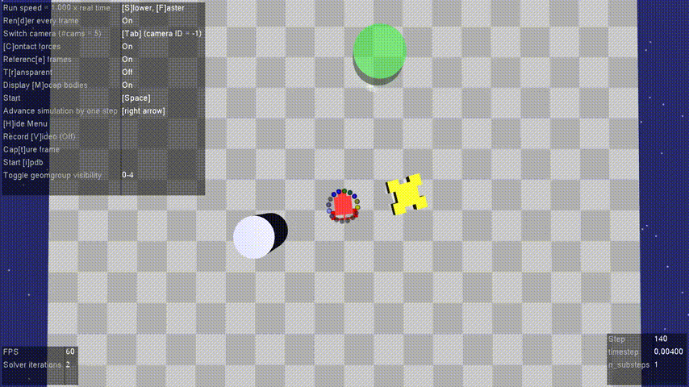
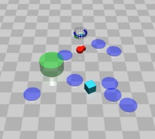
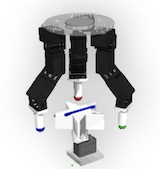
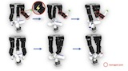
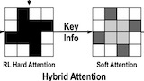
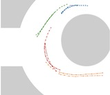

|
I am a PhD student in robotics at University of Michigan, Ann Arbor advised by Prof. Dmitry Berenson. I am working on robot manipulation. Previously, I was a master's student in robotics (MSR) at Robotics Institute of Carnegie Mellon University, where I am advised by Prof. David Held. I was working on safe Reinforcement Learning and manipualtion with Prof. Held. Prior to Joining CMU, I was an undergraduate student at Tsinghua University majoring in Engineering Mechanics (Qian class). I was also fortunate to have a chance to be advised by Prof. Richard Voyles, Prof. Oussama Khatib, Prof. Masayoshi Tomizuka, and Prof. Huaping Liu. Email / CV / Google Scholar / |
{kind=link}
|
|
|  |
Fan Yang, Wenxuan Zhou, Zuxin Liu, Zhao Ding, David Held International Conference on Robotics and Automation (ICRA) , 2024 We propose an algorithm where the RL agent operates in a modified MDP, embedded with a trajectory optimization algorithm to ensure safety. Keywords: Safe RL, Trajectory Optimization, Markov Decision Process [Paper] [Code] [Website] [BibTex] |

|
Zixuan Huang, Yating Lin, Fan Yang, Dmitry Berenson International Conference on Robotics and Automation (ICRA) , 2024 We propose a diffusion model that generates subgoals dynamically in a coarse-to-fine manner, trained by random play data. Keywords: Diffusion Model, Reachability, Coarse to Fine [Paper] [Video] [Website] [BibTex] |

|
Wenxuan Zhou, Bowen Jiang, Fan Yang, Chris Paxton*, David Held* Conference of Robot Learning (Oral), 2023 We propose a spatially-grounded and temporally-abstracted action representation with a hybrid discrete-continuous reinforcement learning framework. Keywords: RL with 3D Vision, Action Representation, Contact-rich manipulation [Paper] [Code] [Website] [BibTex] |
|  |
Fan Yang, Wenxuan Zhou, Harshit Sikchi, David Held ICML Workshop, Safe Learning for Autonomous Driving, 2022 [BibTex] The method of graduating incurring a harder safety constraints can lead to a better performance in safe RL tasks. |
|  |
Fan Yang, Chao Yang, Huaping Liu, Fuchun Sun Conference on Robot Learning (CORL), 2021 [BibTex] We develop a benchmark and evaluate the state-of-the-art lifelong learning method on reinforcement learning tasks, especially robotic manipulation tasks. |
|  |
Fan Yang, Chao Yang, Di Guo, Huaping Liu, Fuchun Sun IEEE 11th Annual International Conference on CYBER Technology in Automation, Control, and Intelligent Systems (CYBER), 2021 [BibTex] An adversarial training algorithm is used to increase the robustness of robot joint damage. |
|  |
Jiachen Li, Fan Yang, Hengbo Ma, Srikanth Malla, Masayoshi Tomizuka, Chiho Choi International Conference on Computer Vision (ICCV), 2021 [BibTex] We develop a method that uses RL agent to select important interactions for trajectory prediction in a highly interactive environment. |
|  |
Jiachen Li*, Fan Yang*, Masayoshi Tomizuka, Chiho Choi Neural Information Processing Systems (NeurIPS), 2020 [BibTex] We develop a Graph-Neural-Network-based method captures the interactions between different agents for trajectory prediction in a highly interactive environment. |